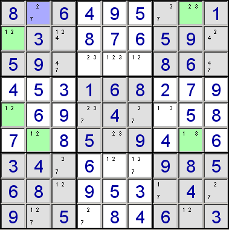

Forcing chains is a technique that allows you to deduce with certainty the content of a cell from considering the implications resulting from the placement of each of another cell's candidates.

Consider r2c1. This has the two candidates, 1 and 2. We will consider the implications of each of these candidates in turn.
if r2c1 = 2, then r1c2 = 7
if r2c1 = 1, then r5c1 = 2, and so r6c2 = 1, and so r6c8 = 3, and so r1c8 = 2, and so r1c2 = 7
So whichever of the two possible values are placed into r2c1, we've deduced that r1c2 must hold a 7. In other words, whichever chain of cells we follow, a certain cell is forced to have a specific value.
Note: unless the puzzle has multiple solutions, one of the considered candidates must be incorrect. This means it must eventually lead to either a contradiction or a dead end. If, when considering a single candidate, you reach a dead end, or find two chains that lead to different conclusions, you can eliminate that candidate from the starting cell. This is verging onto trial-and-error, and SadMan Software Sudoku doesn't do this as part of the forcing chain strategy. However, it can be useful when solving manually.